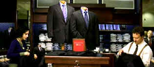

| My First Mister (SE)/ B, B+ |
| Paramount/2001/109/ANA 2.35 |
Swimming in the waters of a young woman's teen angst
can make for roiling cinema material. It's been done many times, so
finding an original voice is like finding a virgin beach in a populated
resort. My First Mister does manage to find that slice of beach,
however small it may be.
When J must face up to the realities of strangled
life, she takes a huge step forward in trying to find a job. The men's
clothing store in the local mall attracts her interest, and compassionate
fiftyish owner Randall decides to give her a chance. Whatever is he
letting himself in for?
 |
|
Lessons in Clothing Store
life. ©Paramount
|
While there are many excellent
comic touches, My First Mister is not a comedy but a drama of
understanding. Director Christine Lahti is treading on thin thematic ice
chronicling the relationship between a troubled late teen and a prissy
bachelor. As the relationship between J and Randall develops, it's clear
that a new world is opening up for both of them. Lahti, working from a
sensitive script by Jill Franklin, traces their path with remarkable
balance. She could easily have into sugar-coating the events, and
while she done stir the emotional pot, it's tastefully done.
Leelee Sobieski is a pretty amazing J. She
exhibits wonderful range of feeling; she really lets it go way out there.
She makes you like J. You feel for her. Christine Lahti's camera is
likewise a champion of the young confused girl. Casting Albert
Brooks as Randall, whose good-natured self-deprecating humor is such a
part of the actor, is a major coup for the production. Brooks, of
course, brings his middle age bag of neurosis' to My First Mister,
but he stays in character while delivering his typical schtick. He's never
sexually threatening to J nor is there a lascivious bone in his body.
Overall, this is a nicely paced and intentionally
modest production. Lahti, a veteran actress making her feature film
directing debut, gets excellent performances from her players. She works
with confidence leading her collaborators, from the excellent
cinematography to the wonderful choice of music, in the right direction.
My First Mister is dressed in fine DVD clothing.
Colors come to life in the world of J and Randall. J's darker
sensibilities are enhanced by excellent black levels. Shadow balance is
accurate and lighting is on target. The image is mostly very sharp
exhibited good depth. It's a bright transfer with of theatrical pop. The
Dolby Digital 5:1 surround is especially kind to the music, delivering it
with an open feel, in balance, and always lively.
Dressed as a special edition by Paramount,
director Christine Lahti presents an enthusiastic and straight forward
audio commentary accompany the film. Lahti shares thematic insights,
casting notes, as well as production stories. |
|
|
|

Click on the DVD MIA symbol for profiles of DVDs missing
in action.
Add films to the DVD MIA Master List by filling out a simple
form. Click Here

Charade/A,B

Successfully combining romantic comedy and suspense is no small
achievement. Charade does it with panache.

With the introduction of the Columbia Super Bit collection it
looks like a new wave of repackaging marketing might be just around the
corner.
New Edition: Bit by Bit

Selections from the Feature
Archive include articles on Akira Kurosawa, Blonde Bimbos, Frank Darabont, Steven Culp, John Herzfeld or Vietnam: The Hollywood Pariah, and many
more....
The Bitch Brigade

A line-up of lean-lipped actresses who marched through
Hollywood in a high heeled goose step armed with razor sharp dialogue.
Click on the image to read all about them.
|